Emergent Communication and Resource Management on a New Planet
Does language impact governing the commons?
Scenario
A group of aliens from different planets land on a resource-rich forest planet. Each alien must gather two types of fruit to survive. They arrive speaking different, mutually unintelligible languages and know nothing about each other's needs or intentions.
Question
We ask: How does the emergence (or absence) of shared language affect the sustainability of a shared resource?
- When no language emerges, each alien acts independently and overharvesting is inevitable.
- As groups develop shared language, communication complexity enables coordinated harvesting—and, potentially, sustainable outcomes.
Model Overview
- Model 1: Language Emergence — How do aliens form clusters of shared understanding (“languages”)?
- Model 2: Resource Competition — How do language clusters affect group harvesting and survival?
Key Parameters
| Symbol | Description | Range / Example |
|---|
| \(\theta_i\) | Agent i's preference for fruit A (\(1-\theta_i\) for B) | [0, 1], drawn from \(\mathrm{Beta}(2,2)\) |
| D | Language complexity (shared within cluster) | [0, 1], higher = more information can be shared |
| ng | Size of group/language cluster g | 1 – N |
| SA, SB | Group's current supply of fruits A & B | ≥ 0 |
Model 1: Language Emergence
Aliens interact when within range; every interaction slightly increases “shared language” between them.
At each round, agents preferentially interact with those with whom they already share some language.
Over time, this leads to emergent clusters—“languages”—where groups of agents can understand each other.
Shared Language Update:
\[
L_{ij}^{(t+1)} =
\begin{cases}
L_{ij}^{(t)} + \lambda, & \text{if agents } i, j \text{ interact at } t \\
\max(0, L_{ij}^{(t)} - \delta), & \text{otherwise (decay)}
\end{cases}
\]
where \(L_{ij}\) is the shared language weight, \(\lambda\) is the increment per interaction, and \(\delta\) is the decay rate for unused ties.
At the beginning of the game, agents are assigned an interaction preference drawn from a normal distribution, with \(\mu\) and \(\sigma\) defined by the user.
In the first round, the probability of interaction between any two agents is randomly drawn from a uniform distribution.
At each subsequent round, the probability of interacting with other agents that they have already met, versus new agents with whom they have not interacted, is determined by this interaction preference value.
A larger mean and smaller standard deviation for this distribution indicates a society that strongly values reinforcing existing ties, while a smaller mean indicates a society that strongly values creating new ties.
Interaction Probability
Each agent \(i\) is assigned a repeat interaction preference, \(\rho_i \sim \mathcal{N}(\mu, \sigma^2)\), where \(\mu\) and \(\sigma\) are user-defined parameters for the distribution’s mean and standard deviation.
The probability that agent \(i\) chooses to interact with a previously encountered agent \(j\) is proportional to:
\[
P_{ij}^{(t)} \propto \rho_i \cdot L_{ij}^{(t)} + (1 - \rho_i) \cdot \epsilon
\]
where \(L_{ij}^{(t)}\) is the shared language weight (if \(j\) has been encountered before), and \(\epsilon\) is a small constant to allow exploration of new ties.
Clusters are identified as connected components in the agent network where \(L_{ij}\) exceeds a threshold.
The complexity of each cluster's language (\(D_g\)) is proportional to the share of all interactions that occur within the cluster.
Cluster Complexity:
\[
D_g = \frac{\text{Interactions within cluster } g}{\text{Total interactions}}
\]
Model 2: Resource Competition & Extraction
After language clusters emerge, agents form groups for resource management.
Each agent has a fixed proportional need for fruits A and B, given by \(\theta_i\) and \(1-\theta_i\), respectively.
Group-level language complexity \(D_g\) shapes the information-processing ability of each group:
- Low D: Only immediate needs visible; no abstract planning.
- Medium D: Groups can share trends and coordinate for short-term gains.
- High D: Long-term planning, carrying capacity, and collective restraint are possible.
Agent i's Basic Daily Needs:
\[
N_{i,A} = \theta_i \cdot N_0
\qquad
N_{i,B} = (1-\theta_i) \cdot N_0
\]
where \(N_0\) is a base need constant (e.g., 50 units).
Extraction Strategies
Low Complexity (\(D < D_{\text{low}}\)):
\[
E_{i,A} = \min\left( N_{i,A} \cdot \alpha, \frac{S_A}{n_g} \right)
\qquad
E_{i,B} = \min\left( N_{i,B} \cdot \alpha, \frac{S_B}{n_g} \right)
\]
\[
\alpha > 1 \quad \text{(fear of competition/overharvesting)}
\]
Medium Complexity (\(D_{\text{low}} \leq D < D_{\text{high}}\)):
\[
E_{i,A} = \frac{N_{i,A}}{\sum_{j \in G_g} N_{j,A}} \cdot S_A \cdot \text{TrendAdj}
\]
\(\text{TrendAdj} < 1\) if resources are declining; >1 if increasing.
High Complexity (\(D \geq D_{\text{high}}\)):
Sustainable, forward-looking allocation based on carrying capacity:
\[
E_{i,A} = \frac{N_{i,A}}{\sum_{j \in G_g} N_{j,A}} \cdot S_A^{\text{sus}} \cdot \gamma
\]
\[
S_A^{\text{sus}} = \text{sustainable pool for A}
\]
\[
\gamma < 1 \text{ if long-term scarcity projected}
\]
Conflict & Group Dynamics
If a group's patch is depleted, and nearby groups have remaining resources, conflict can arise. The probability of winning is determined by group size and language complexity (more complex groups coordinate better).
Probability Group \(g\) defeats \(h\):
\[
P_{\text{win}} = \frac{n_g (1 + D_g)}{n_g (1 + D_g) + n_h (1 + D_h)}
\]
Simulation Outputs
- Language clusters: Their size and internal complexity over time.
- Resource levels: Per group, per step; overharvesting events.
- Survival rates: Proportion of agents alive in each group.
- Resource depletion and group conflicts traced over time.
See the simulation and results below!
Simulation Results & Visualizations
Language Emergence Dynamics
Each "case" below corresponds to a different scenario of agent mobility, interaction range, and shared-language decay.
These dynamics produce different patterns of language cluster emergence, number and size of language groups, and the complexity of shared languages.
Case 1: Minimal Convergence
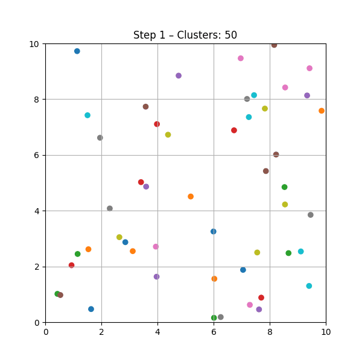
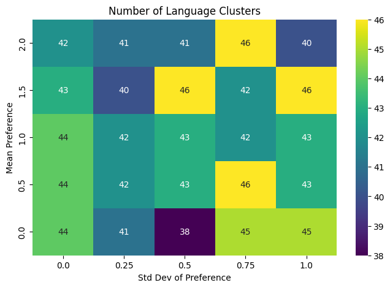
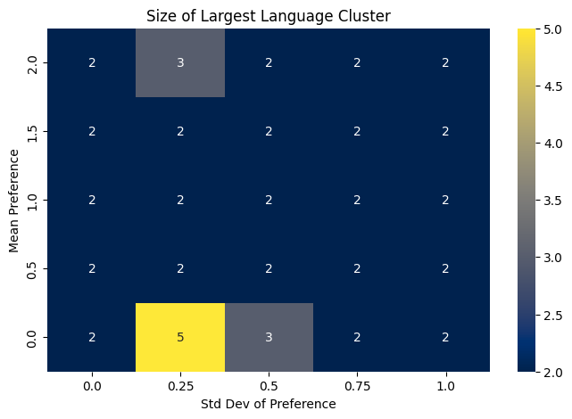
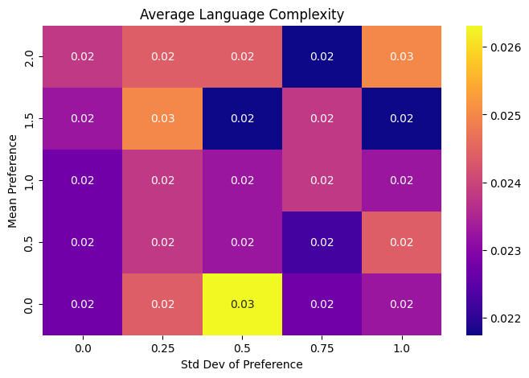
Case 2: Regional Convergence
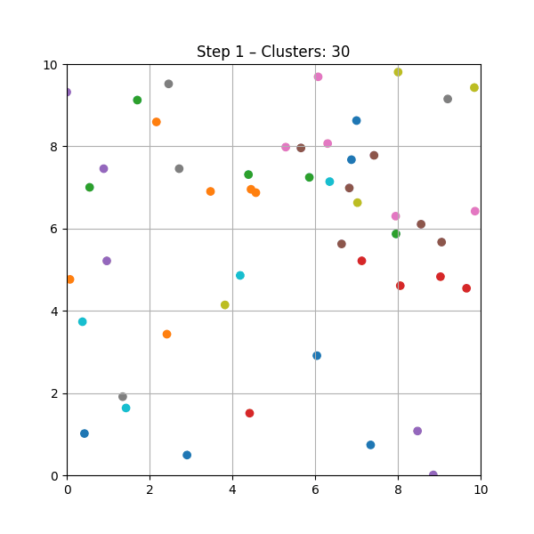
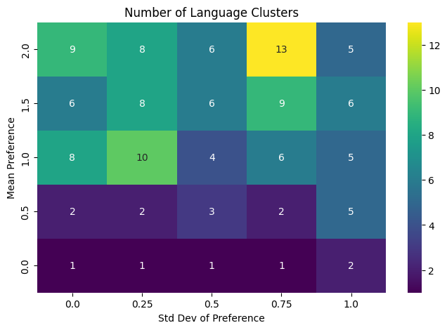
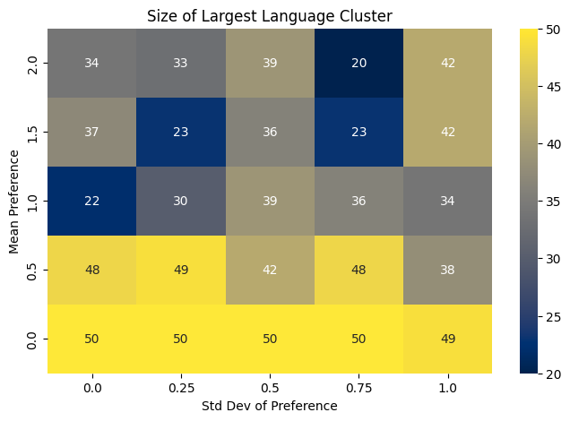
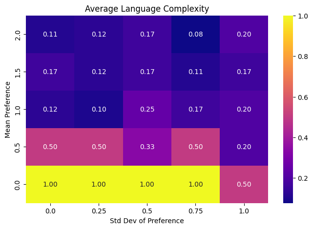
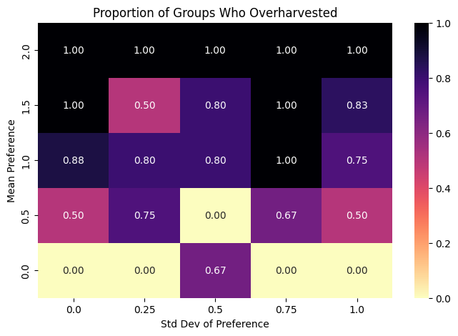
Case 3: Several Medium Clusters
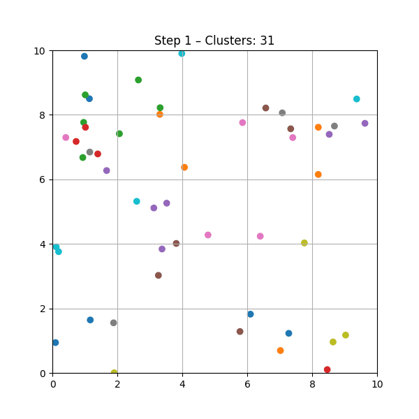
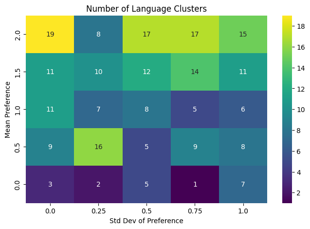
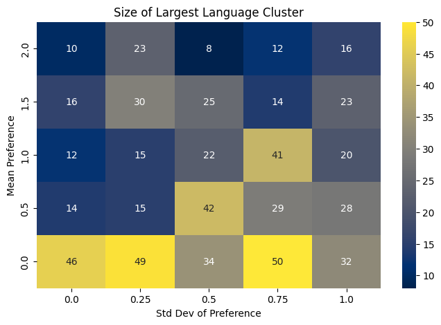
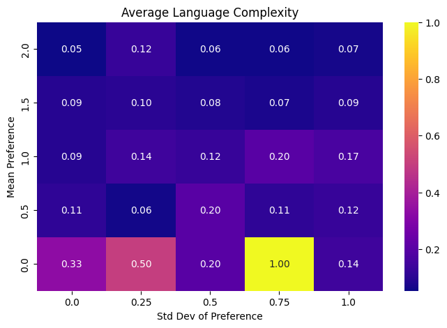
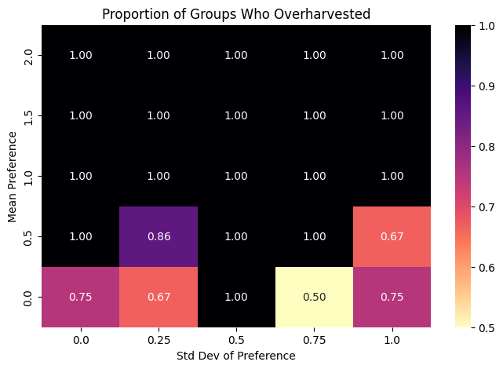
Case 4: Global Convergence
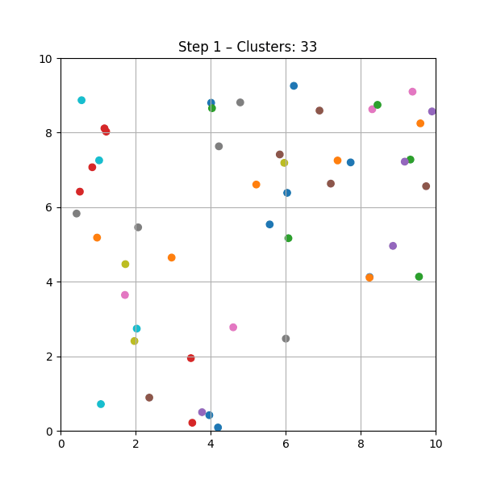
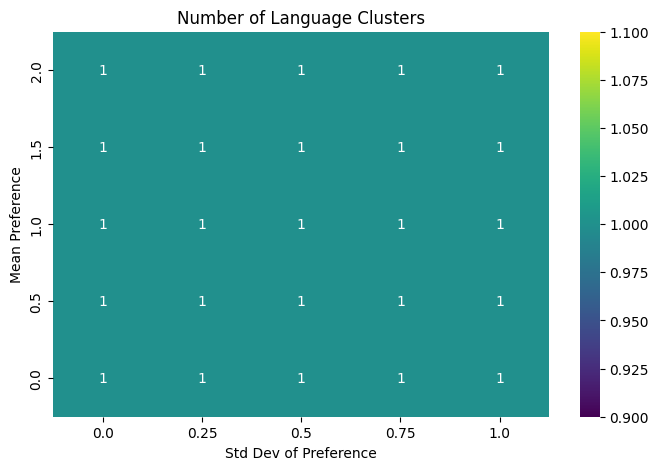
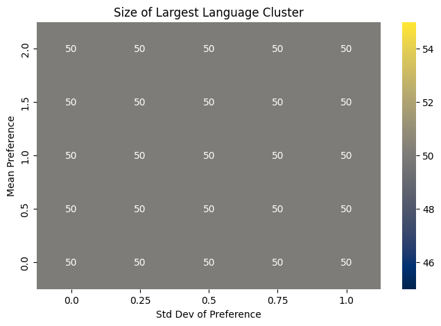
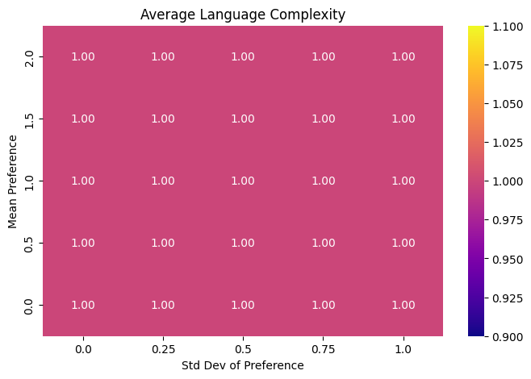
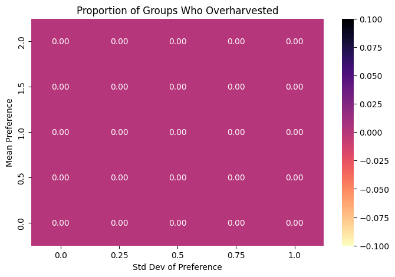
Impact of Language Complexity on Harvesting
The following visualizations show the outcomes of resource extraction under different group language complexities.
Each figure below corresponds to an experimental run at a different value of average group language complexity (\(D\)), illustrating the relation between communicative capacity and ecological sustainability.
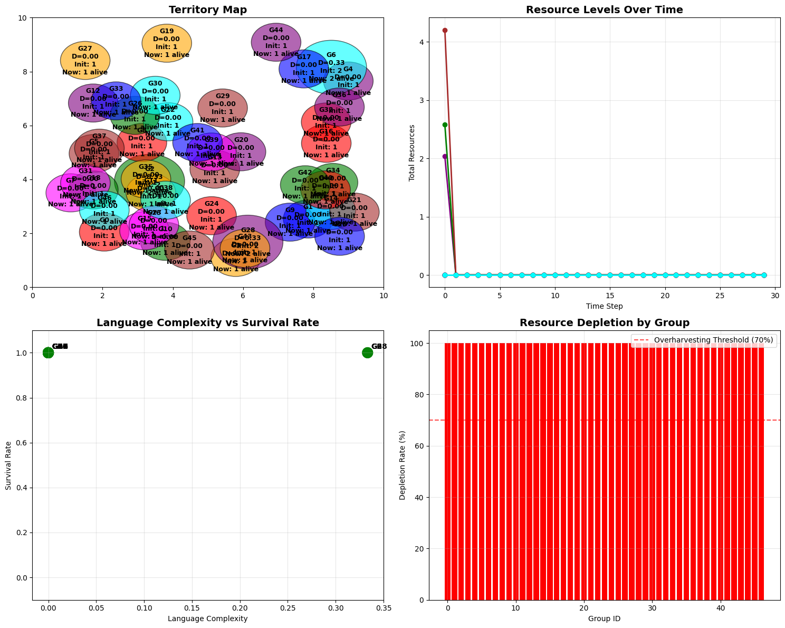
Low communication complexity, no shared language: rapid overharvesting and collapse.
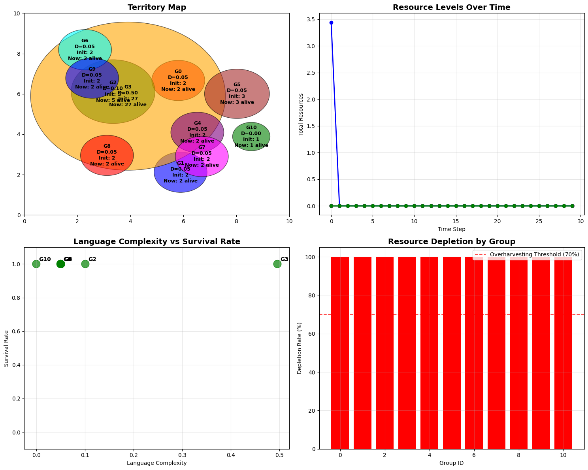
Moderate complexity, one big language cluster: some coordination, but resources still collapse.
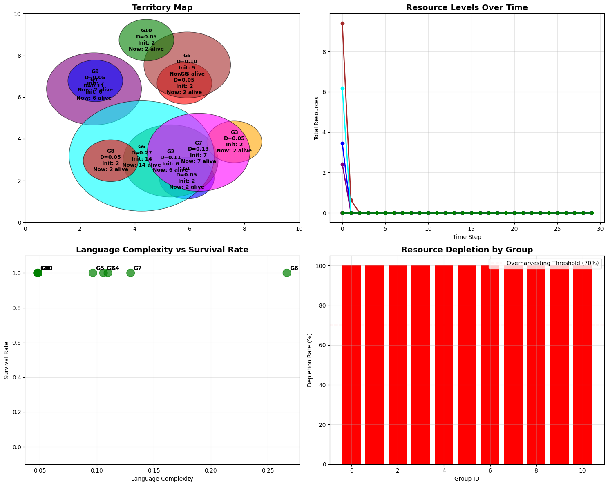
Several language groups: group-level communication prolongs sustainability, but only a little.
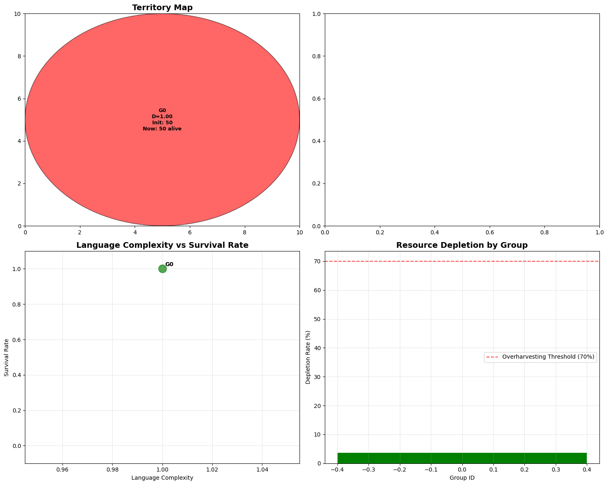
Maximal complexity and shared language: resources are managed sustainably, high survival rate.
Interpretation:
- When groups have lower preferences for repeated interactions, more languages emerge, with generally lower complexity.
- When groups have higher preferences for repeated interactions, fewer languages emerge, but they are more complex.
- When communication complexity is low, groups tend to overharvest and resources collapse rapidly.
- With higher complexity, groups coordinate and resources are sustained longer or indefinitely.
Overall, the model suggests that group preferences between existing ties versus new ties can have important implications for resource management.
The transition from collapse to sustainability depends critically on the capacity for abstract reasoning and collective planning.